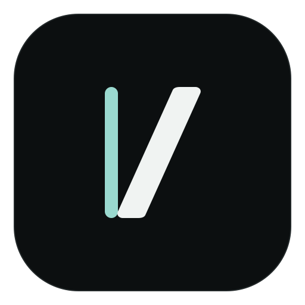
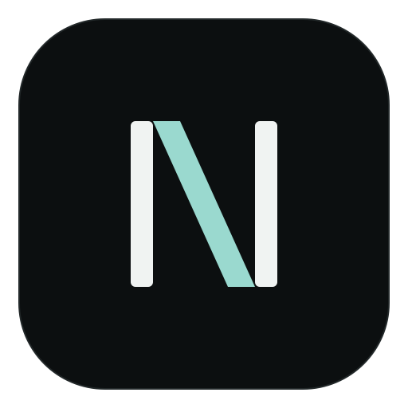
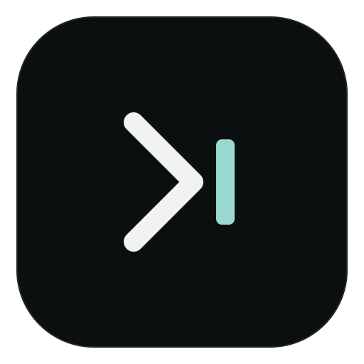
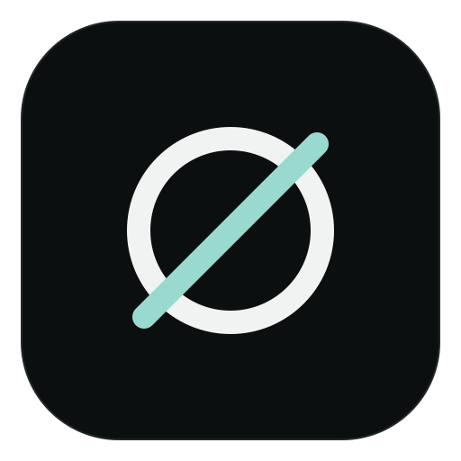
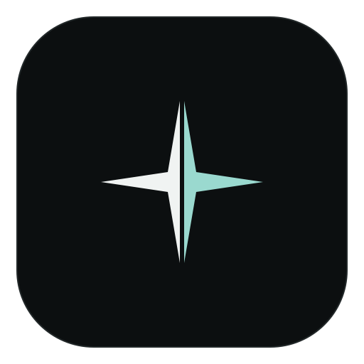

Zero AI slop. Hand-crafted geometric vector marks strictly following the near-black (#0C0F10), warm-white (#F0F3F2), and mineral-teal (#9AD9CF) palette defined in DESIGN.md.
The app's signature UI motif: the vertical teal assistant response rail paired with the terminal slash. Together they form an abstract "A" and prompt mark.

Architectural Swiss minimalism. Two solid upright pillars in warm white bridged by an energetic mineral-teal diagonal vector, forming an iconic "N" / "A".

The pure command-line spirit: a sharp platinum prompt chevron (>) and an active mineral-teal block cursor. Unapologetic developer utility.

The mathematical symbol for the null set (Ø) and the universal "Anti-" sign. A clean perimeter ring bisected by a 45° mineral-teal rail: zero telemetry, zero middlemen.

A razor-sharp geometric 4-point star cleanly bifurcated by a vertical slit. Left half is warm white, right half is mineral-teal. The celestial ignition mark.
